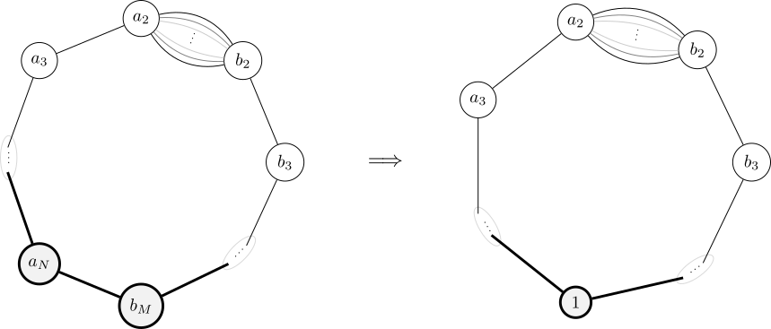
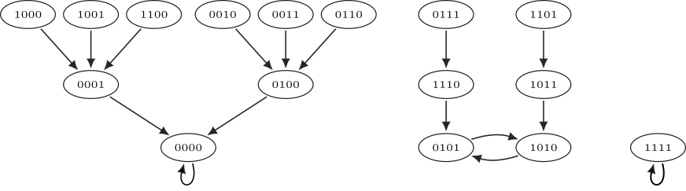
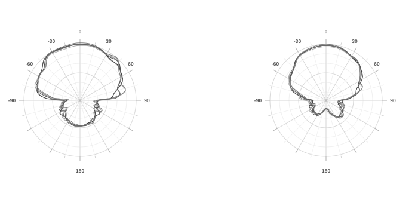

About
Hello. My interests are graph theory and combinatorics. You can email me at bryan.busby@upr.edu. A CV is available here.
Research
Arithmetical Structures on Graphs
We consider arithmetical structures on cycles with a multi-edge. We classify and enumerate the resulting families, giving constructive descriptions and counting formulas. Advised by Alexander Díaz and Joel Louwsma.

Nonlinear Boolean Monomial Systems
We consider transient length bounds for Boolean monomial systems. Using dependency graphs and acyclic subgraphs, we derive upper bounds and relate them to properties of the underlying digraph. The Frobenius number enters the argument. Advised by Omar Colón.
Manuscript. Transient Length Bounds for Boolean Monomial Systems (in preparation)

5G RF Propagation Measurements
We study 5G propagation in microwave and millimeter-wave bands using SDR measurements. The work includes GNU Radio instrumentation, Vivaldi antenna design, and channel measurements for attenuation and directional effects. It also treats the measurement and signal-processing problems that arise in GNU Radio. Advised by Rafael Solís.
